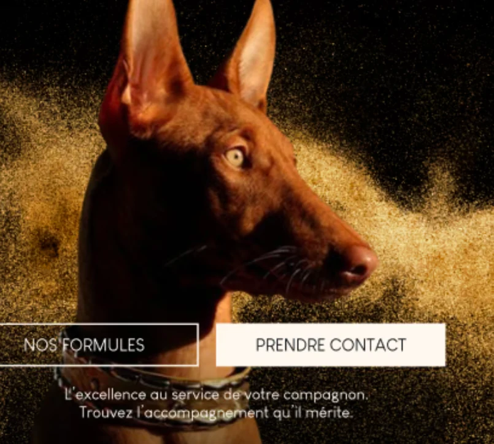
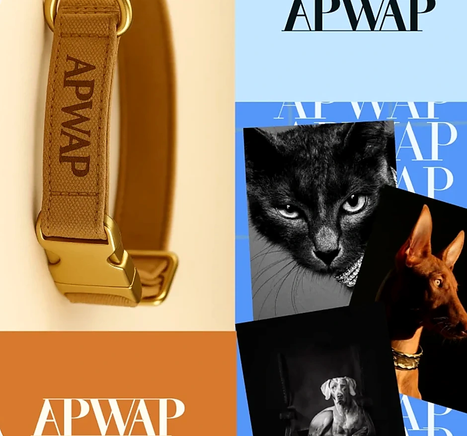

✳ UX/UI DESIGNER — PARIS PORTFOLIO / 2026
DESIGNER
D’EXPÉRIENCES
DIGITALES.
J’imagine des interfaces claires, sensibles et mémorables. Du premier insight au prototype final.
01 / PROJETS SÉLECTIONNÉS
PROJETS CHOISIS.
Une sélection de concepts, interfaces et expériences, de la recherche UX à la direction artistique.

03 / IDENTITÉ VISUELLE APWAP L'ÉLÉGANCE AU SERVICE DE NOS COMPAGNONS.
Aucun projet pour cette catégorie.
AUTRES PROJETS À EXPLORER
02 / APPROCHE
LE DESIGN,
AVEC INTENTION.
Recherche, identité visuelle, interfaces et prototypage : je relie compréhension des usages et exigence graphique.
✳01 / COMPRENDRE
Explorer
Observer les usages, comprendre les besoins et poser les bonnes questions.
◈02 / CONCEVOIR
Imaginer
Construire des parcours, des concepts et des identités visuelles cohérentes.
⌘03 / DONNER VIE
Prototyper
Passer de l'idée à l'interface et rendre les interactions tangibles.
↗04 / AFFINER
Itérer
Tester, ajuster et faire évoluer chaque détail pour plus de clarté.
03 / MÉTHODE CRÉATIVE
L'IA COMME OUTIL.
L'HUMAIN COMME CAP.
Exploration d’idées, itération rapide, puis des choix de design guidés par les besoins des utilisateurs. L’IA accompagne le processus sans remplacer la réflexion UX.
VOIR MES EXPLORATIONS04 / CONTACT
ON TRAVAILLE
ENSEMBLE ?
Une idée, une alternance ou un projet ? Discutons de ce que nous pourrions imaginer.